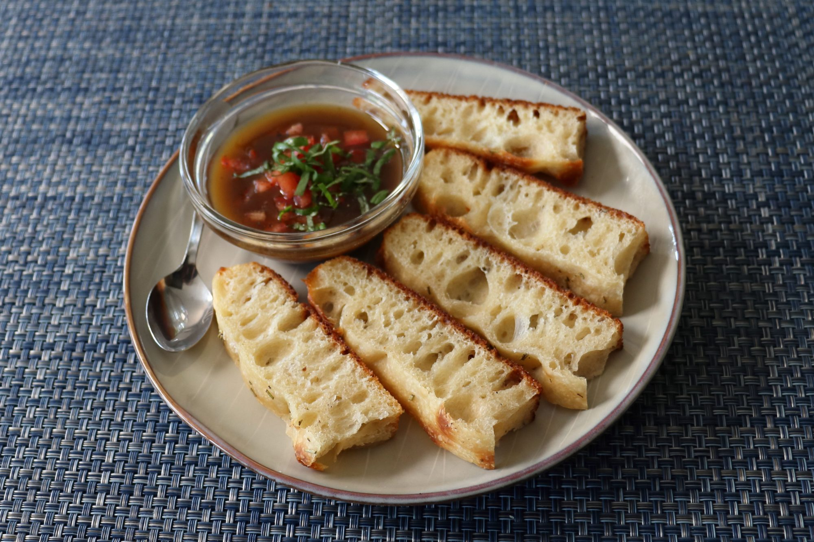

No-Knead Big Bubble Focaccia Recipe

It holds big bubbles in the baked dough and because of the long fermentation time, has a far superior flavour.
Ingredients
- 4 x cups bread flour
- 2 x tablespoons bread flour
- ¼ x teaspoon active dry yeast
- 2 x teaspoons kosher salt
- 4 teaspoons extra-virgin olive oil, or more as needed
- 1⅔ x cups water, at room temperature
- 1 x tablespoon minced fresh rosemary
- 1 x tablespoon flaky sea salt
Steps
- Stir yeast into bread flour in a bowl. Add salt, followed by 4 teaspoons oil, and water. Stir with a spoon until a wet, sticky dough forms.
- Cover and let sit at room temperature for 12 to 14 hours.
- Uncover dough and transfer to an oiled work surface. Using oiled hands, press and push the dough into a rectangle, 16x12 inches in size. Fold dough into thirds horizontally; fold vertically into thirds. Transfer smooth side up into a generously oiled pan.
- Cover the pan with plastic wrap and let rest until almost doubled in size, for 1 hour.
- Using oiled hands, fold once more into thirds horizontally, then into thirds vertically to develop gluten structure. Flip dough, smooth side up, on the pan; cover with plastic wrap and let rest for 1 hour more.
- Unwrap and stretch and fold dough once more in each direction using oiled hands.
- Transfer, smooth side up, into a generously oiled metal baking pan. Lightly drizzle with additional olive oil and stretch to fit the pan. Cover and let rest for 2 hours.
- Preheat the oven to 425 degrees F (220 degrees C)
- Unwrap and poke holes in the top of the dough using oiled fingers if desired for the traditional focaccia look. Scatter over rosemary and flaky sea salt.
- Bake in the center of the preheated oven until browned, about 30 minutes. Let cool in the pan for 10 minutes; transfer to a wire rack and let cool to room temperature, about 30 minutes. Slice and serve.
Odin Recipes